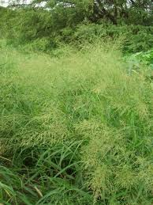
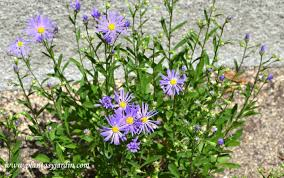

El periodo vegetativo es de 232 días. La flora comprende plantas xerófilas, herbáceas, arbustos de diferentes tamaños entremezclados con algunas especies de agaves, yucas, cactáceas, leguminosas como huisache, guamúchil, quiebre hacha, retama, zacates.
|  |  |